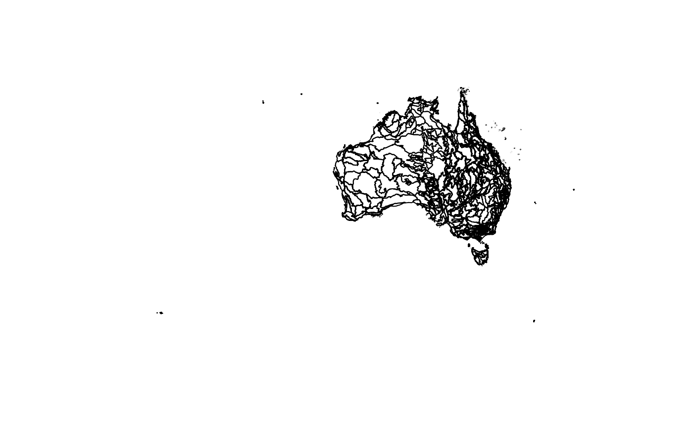

The 419 IBRA7 subregions of Australia, with their parent bioregions, as an sf
polygon layer. This is the layer ibra_classification uses to assign
coordinates to an IBRA subregion and bioregion.
Format
An sf data frame with 419 rows (one MULTIPOLYGON per subregion) and 5
attribute columns, in WGS84 longitude/latitude (EPSG:4326):
- SUB_CODE_7
IBRA7 subregion code.
- SUB_NAME_7
IBRA7 subregion name.
- REG_CODE_7
IBRA7 bioregion code.
- REG_NAME_7
IBRA7 bioregion name.
- HECTARES
Area of the subregion in hectares, from the source data.
Source
Australian Government Department of Climate Change, Energy, the Environment and Water (DCCEEW). Interim Biogeographic Regionalisation for Australia (IBRA), Version 7 (Subregions). Licensed under Creative Commons Attribution. https://www.dcceew.gov.au/environment/land/nrs/science/ibra
Details
Derived from the official IBRA7 subregions shapefile (GDA94, EPSG:4283) by keeping only
the columns above, repairing invalid polygons, simplifying boundaries with a 25 m
tolerance, and reprojecting to EPSG:4326. Simplification was checked against the full
resolution layer: all 19,736 WildObs deployments fall in the same subregion with either.
The build is recorded in dev/add_data_to_package.R.
Convert to a terra SpatVector with terra::vect(ibra) if you prefer terra.
Examples
# The attribute table, without the polygons
head(sf::st_drop_geometry(ibra))
#> SUB_CODE_7 SUB_NAME_7 REG_CODE_7 REG_NAME_7 HECTARES
#> 1 ARC01 Murgenella ARC Arnhem Coast 113179.56
#> 2 ARC02 Maningrida ARC Arnhem Coast 1741375.63
#> 3 ARC03 Nhulunbuy ARC Arnhem Coast 1159658.69
#> 4 ARC04 Groote ARC Arnhem Coast 268734.71
#> 5 ARC05 Wessels ARC Arnhem Coast 52719.97
#> 6 ARP01 Alligator ARP Arnhem Plateau 1038621.41
# Map the subregion outlines
plot(sf::st_geometry(ibra))
